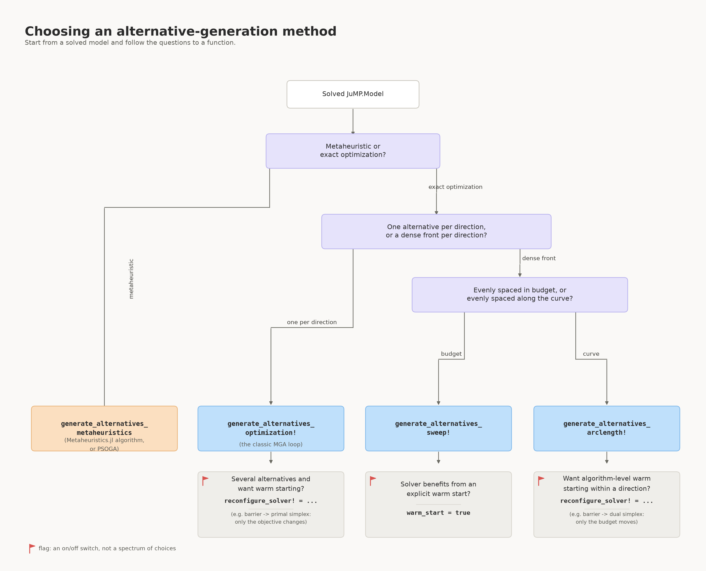

Choosing What to Use
This page answers the three questions you need to answer before calling anything: which function, which modeling_method, and how many alternatives/directions to ask for. For the mechanics of actually calling each function, see How to use; for the theory behind each choice, see Concepts.
Which function should I use?

When "metaheuristic" is the right branch, and when it isn't. Reach for generate_alternatives_metaheuristics/PSOGA when your model doesn't have a solver suited to many repeated exact re-solves (e.g. a black-box or highly nonconvex model where an LP/QP-style optimization pass isn't available or affordable), or when you specifically want a population-based search that explores differently from a sequence of directed re-solves. Otherwise, prefer the optimization-based branch: it is exact, deterministic (given the same solver/settings), and — for models like typical energy system models, which are usually LPs or convex QPs with plenty of equality constraints (e.g. demand balance) — considerably cheaper and more reliable, since population-based metaheuristics do not natively enforce equality constraints and can spend most of their search on infeasible or near-infeasible individuals (this package's own PSOGA inherits that same limitation; see PSOGA in How to use and issue #19). If you do go the metaheuristic route, Recommended algorithms gives concrete starting points instead of the full Metaheuristics.jl list.
The flag icon (🚩) in the flowchart marks a binary on/off switch (warm_start or reconfigure_solver! being set at all), not a spectrum of choices like the questions above it — see Warm-starting a direction once you've picked a function.
See Alternative-Generation Strategies for the theory behind the three optimization-based functions, and Modeling Methods for the modeling_method each of them also accepts (independently of the choices above). The table below summarises when to prefer each, since the chart above is clear on what you can choose but not on why one beats another for your situation:
| Function | Points returned | Prefer it when… | Main limitation | Cost per direction |
|---|---|---|---|---|
generate_alternatives_optimization! | 1 per direction | you just want n_alternatives distinct options, nothing more | no visibility into the trade-off within a direction — only the full-budget corner | 1 solve |
generate_alternatives_sweep! | n_budget per direction, evenly spaced in cost | you want the full cost/diversity trade-off and the front is expected to be roughly straight, or you don't want arclength's small predictor-corrector overhead | wastes points on flat stretches, under-samples sharp bends; no built-in solver-warm-start hook (use warm_start=true instead, see below) | n_budget solves |
generate_alternatives_arclength! | n_budget per direction, evenly spaced along the curve | the front likely has a knee/bend and you want points concentrated there, not wasted on flat regions; or you want reconfigure_solver!-based warm-starting (Section~Arclength Continuation) | a few extra solves beyond n_budget from rejected predictor steps; realised point count per direction can vary slightly | ≈n_budget solves + occasional rejected retries |
generate_alternatives_metaheuristics / PSOGA | n_alternatives total | no suitable exact solver is available, or you want population-based exploration on purpose | stochastic and approximate — no feasibility/exactness guarantee; struggles on equality-heavy models (see above) | population size × iterations (set by you; typically far more model solves/evaluations than one LP re-solve) |
Cost here means LP/QP re-solves for the optimization-based rows, and objective/constraint evaluations for the metaheuristic row — the two are not directly comparable operation-for-operation, but the metaheuristic row is almost always the more expensive one in wall-clock time for a model where an exact re-solve is available at all.
Choosing a modeling method
Once you've picked a function, modeling_method (accepted by all three optimization-based functions) picks which direction each alternative moves in. See Modeling Methods for the full argument reference and Optimization-based Methods for the math behind each.
| Method | Prefer it when… | Watch out for |
|---|---|---|
:Max_Distance (default) | you want the single farthest alternative from the optimum, or a small, fixed set of directions with no need to remember earlier alternatives | with many directions, later ones are not informed by earlier ones — no built-in spread-out behaviour |
:HSJ | you want each new alternative to avoid whatever was non-zero last time, cheaply (binary weights, no accumulation) | "forgets" everything before the immediately previous alternative — a single 0/1 signal, coarser than SPORES |
:Spores | you want later alternatives to keep steering away from everything explored so far, not just the last one (weights accumulate every iteration) | every scored variable needs a finite upper bound (see the box in Optimization-based Methods); typically used with sweep!/arclength!'s larger n_directions since the accumulated memory pays off more with more directions |
:Min_Max_Variables | you want a fast, memory-free way to explore many random corners of the feasible region, e.g. for a quick sanity scan | purely random per call — no guarantee two runs, or even two successive alternatives, differ meaningfully; no accumulated diversity pressure |
:Random_Vector | like :Min_Max_Variables but you want smoother, continuous perturbations instead of ±1/0 corners | same lack of memory across iterations as :Min_Max_Variables |
:Directionally_Weighted_Variables | you want directions chosen consistently with the original objective's own coefficients, to bias toward non-dominated alternatives | weights are redrawn (within the objective-consistent sign ranges) every call, same as :Min_Max_Variables/:Random_Vector — still stochastic, just constrained |
If you're using a metaheuristic function instead, the equivalent choice is which metaheuristic_algorithm to construct — see Recommended algorithms and Using PSOGA in How to use.
Choosing how many alternatives or directions to request
n_alternatives/n_directions is the one number every function needs, and there's no universally correct value — it trades runtime directly against how much of the near-optimal region you actually see.
- Cost is close to linear in this number.
generate_alternatives_optimization!pays one extra solve per direction;generate_alternatives_sweep!/generate_alternatives_arclength!payn_budgetextra solves per direction (see the cost column in the function table above). There's no shortcut around this — start small. - Start with a handful (3–5) to sanity-check first. Confirm
optimality_gapgives you alternatives that are actually diverse and sensible before scaling up — a gap that's too tight makes every direction converge on nearly the same point regardless of how many you request. - Methods that accumulate memory reward more directions; methods that don't, reward it less predictably.
:Sporesand:HSJsteer each new direction away from what's already been found, so each additional direction tends to add distinct coverage.:Min_Max_Variablesand:Random_Vectorredraw independently every time, so more directions mostly means more chances at overlap — you may need noticeably more of them to cover the same ground, or a method with memory instead. - A practical starting point: pick roughly one direction per technology/investment category you actually want traded off against the others (e.g. one per major generation or storage technology in an energy system model), then look for diminishing returns — if the newest alternatives look like near-duplicates of earlier ones, more directions are unlikely to help; consider a different
modeling_methodinstead. n_budgetis a separate knob fromn_directions/n_alternatives. It controls how many points you get within each direction's front (generate_alternatives_sweep!/generate_alternatives_arclength!only) and doesn't affect how many directions are explored. The default of6is a reasonable start; raise it only if the front looks under-sampled where it bends (arclength spacing already helps with this more than sweep's even-in-budget spacing — see Arclength Continuation).